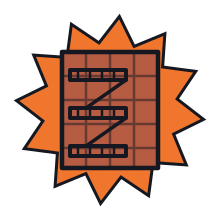
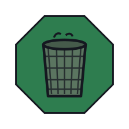
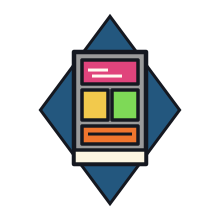

Every command source — a headset, a phone, a browser, a learned policy — speaks one wire protocol and passes one whole-body controller. The MuJoCo twin runs the identical stack at 500 Hz. Nothing here is a demo copy.
Teleop and autonomy publish commands; driver nodes turn them into torque and
publish state back. Boot the twin and one mujoco_sim node stands in for every
driver — consumers never notice.
/mabel_cmd /arms /hands /body/joint_states /odom /images /scanOne driver per bus, each restartable alone. Swap the yellow tile in and the whole robot becomes the simulator — same topics, same code.

A compliant whole-body controller renders every reference — a teleoperator, a collaborator's push, or a learned policy — through the same quadratic program, with self-collision avoidance built in. Try it: drive the modes below.
Swerve base, holonomic. Caps: 0.8 m/s linear, 2.0 rad/s yaw — the tip-over model trims them as the lift rises.
Pick a hand, then move the joystick — its green palm tracking point follows and that arm tracks it by IK. Both palms are tracked bimanually; base and lift are held.
Same green palm targets, but now the swerve base follows the hand centroid through the comfort box, and the lift & torso are jointly engaged — lazier (50× / 2× weighted) — to keep both hands in reach.
| Property | Result |
|---|---|
| Gravity-comp hold (3 s) | < 0.1 rad · sags > 1 rad w/o |
| Felt residual at ±40% mass error | < 0.06 N·m |
| Contact localization | 0.5 N · 1.7 cm, correct link |
| Self-collision, hand→chest | −3.5 cm → +4.1 cm standoff |

A lift-aware tip-over envelope trims velocity before the physics does: a speed pulse that tilts the bare platform 13.1° passes at 0.1° with the envelope on — and the robot still carries 18 / 16 / 14 kg at lift 0 / 0.30 / 0.64 m.

The operator's unobserved torso frame is recovered analytically from head and wrist poses alone — so glancing sideways never steers the base. No waist trackers, no mode switches, no learned priors.
One canonical model generates the URDF, the MJCF, and every derived artifact.
The production controller drives MuJoCo unmodified at 500 Hz across 35 released environments —
use_sim:=true is the only difference.